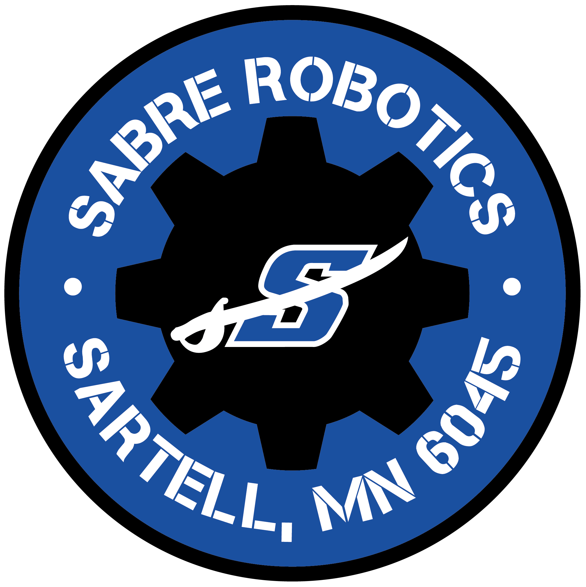

FRC 6045 Programming Website!The purpose of this website is to make it easier to find programming-related things that are used or made by FRC 6045.
Installation of required software
You will need a Siemens account to download and install these.
If the software asks you to restart, click the Windows key and R at the same time, then type "regedit" and press enter. Go to HKEY_LOCAL_MACHINE\System\CurrentControlSet\Control\Session Manager and delete the file called PendingFileRenameOperations. Restarting is not necessary.
Guides for the programming languages
One can use either Ladder Logic (LAD) or Functional Block Diagram (FBD). In some situations, one can also use the text-based SCL/STL. is a website with many descriptions of FBD diagrams.